Universidad Mariano Gálvez Centro Universitario Cuilapa, Santa Rosa Ingeniería en sistemas de información y ciencias de la computación
Manual de usuario
Guía ilustrada para administración, caja, bodega y consulta de reportes
José Alfredo Davila Abrego Carné 7490236074 Trabajo individual
Curso: Desarrollo Web Catedrático: M.A. Ing. Elvis Morales
24 de octubre de 2026 Librería San Francisco · Stack 3
1. Iniciar y cerrar sesión
Abra https://libreria-san-francisco.onrender.com. Para demostración local: http://127.0.0.1:5176.
Escriba su usuario y contraseña. Pulse Iniciar sesión.
Verá Inicio con el mensaje de bienvenida y su sucursal activa.
Use el icono Cerrar sesión al terminar, especialmente en equipos compartidos.
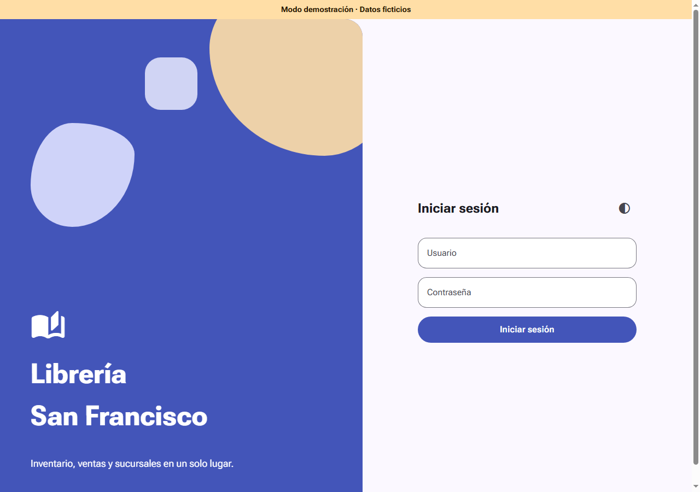
Pantalla de acceso sin credenciales. Todas las capturas proceden de la demostración ficticia.
Si el acceso es rechazado, revise las credenciales y el estado de la cuenta. Después de varios intentos debe esperar. Solicite al administrador restablecer el acceso; el código de facturación no es la contraseña.
2. Inicio y navegación
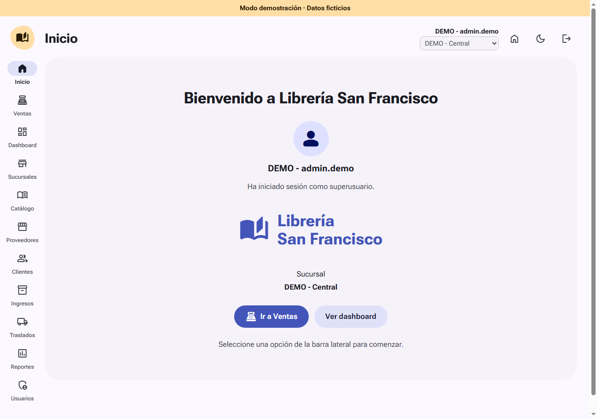
Bienvenida, usuario activo y menú lateral. Ventas aparece inmediatamente debajo de Inicio.
La barra muestra los módulos permitidos. No ver un módulo puede deberse a su perfil; no significa que sus datos hayan desaparecido. Inicio siempre es la primera pantalla después de iniciar sesión. El botón de casa permite volver.
Cambiar de sucursal
Use el selector debajo de su nombre, arriba a la derecha. Solo aparecen sucursales activas disponibles para su cuenta. Al elegir otra se recargan los datos y el inventario de esa ubicación. Compruebe el nombre antes de cobrar, recibir mercadería o enviar/aceptar traslados. El cambio se bloquea mientras se guarda una operación.
3. Usuarios y sucursales asignadas
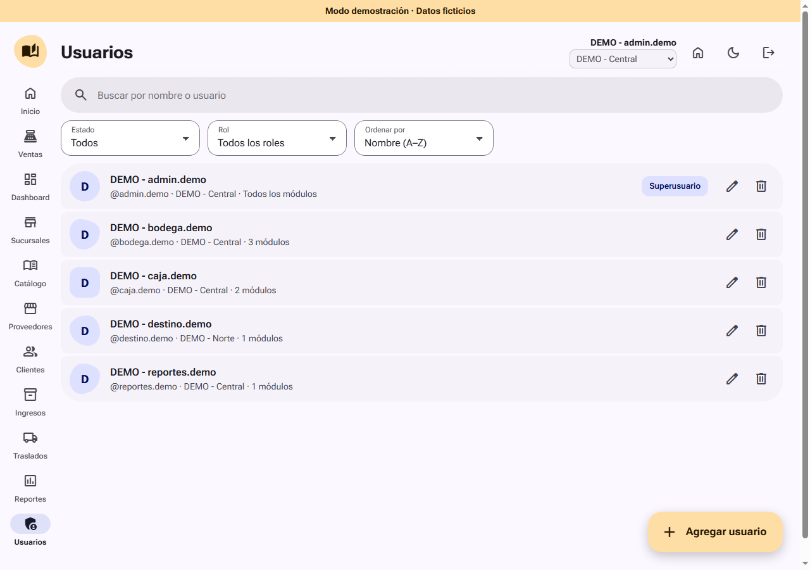
Administración de cuentas: disponible exclusivamente para el superusuario.
Entre en Usuarios y pulse Agregar usuario.
Complete nombre, usuario y contraseña; asigne el código de facturación de cuatro dígitos.
Elija rol, módulos permitidos, sucursal principal y las sucursales adicionales de trabajo.
Guarde y entregue el acceso de forma privada. Nunca comparta el código entre cajeros.
Para modificar el acceso, abra Editar. Los cambios de permisos/asignaciones pueden exigir iniciar sesión nuevamente.
Una cuenta empleada puede trabajar en varias sucursales autorizadas. Un superusuario dispone de las sucursales activas, pero también debe activar la ubicación correspondiente para operar. Las sucursales con usuarios o documentos relacionados no se eliminan libremente.
4. Productos, proveedores y clientes
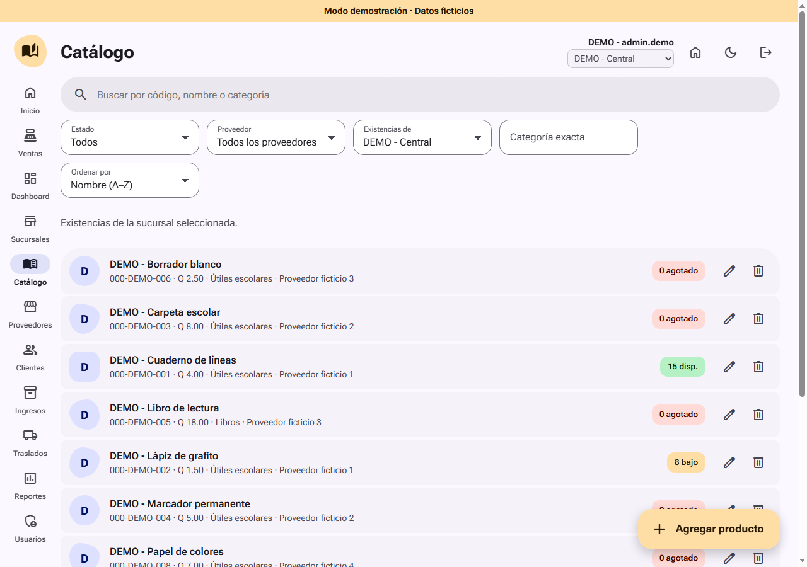
Catálogo común con existencias de la sucursal seleccionada.
Registre primero el proveedor si recibirá productos asociados a él.
En Catálogo, use Agregar producto y complete código, nombre, costo, precio, mínimo y proveedor.
Conserve los ceros iniciales del código. Puede buscar por código, nombre o categoría.
En Clientes, guarde nombre y NIT. El sistema normaliza el NIT al consultar y guardar.
Los filtros de existencias cambian la consulta; no trasladan unidades ni modifican la sucursal activa.
5. Registrar un ingreso
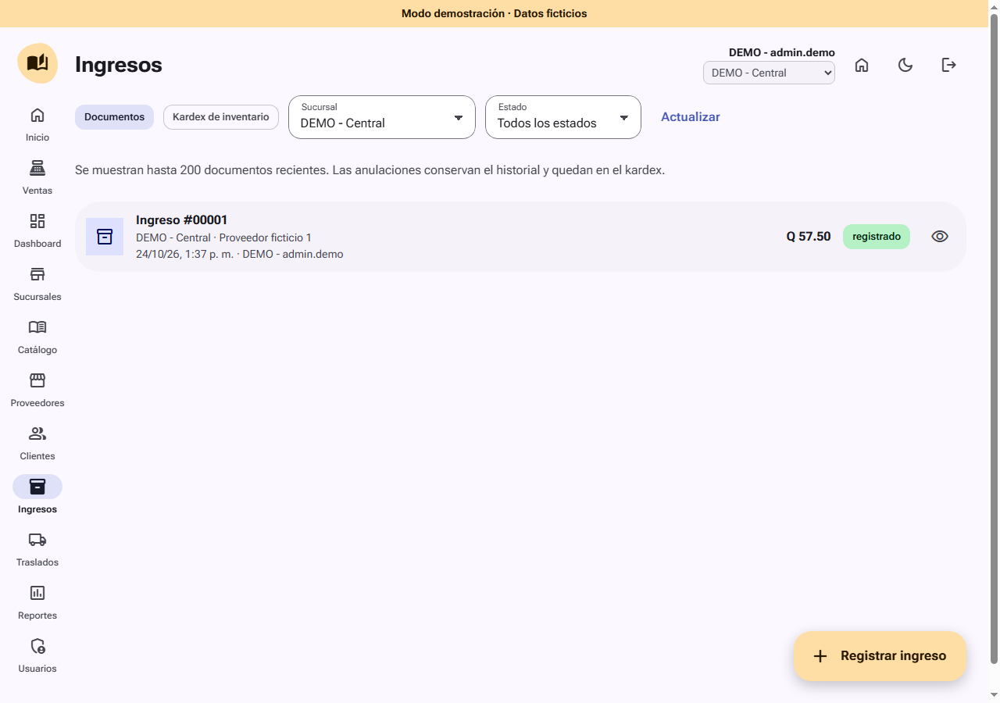
Historial de ingresos de la demostración.
Confirme la sucursal activa y entre en Ingresos.
Abra un nuevo ingreso y seleccione un proveedor activo.
Agregue productos de ese proveedor y sus cantidades.
Revise el detalle y guarde. El sistema calcula el costo y aumenta el inventario de esta sucursal.
Abra el documento para consultar o imprimir. Si corresponde, genere el comprobante de pago de prueba.
El pago de prueba no ejecuta una transferencia bancaria. Para corregir un ingreso ya registrado, un superusuario puede anularlo con motivo, siempre que exista stock para revertirlo. No borre el documento para cuadrar existencias.
6. Caja de ventas · agregar productos
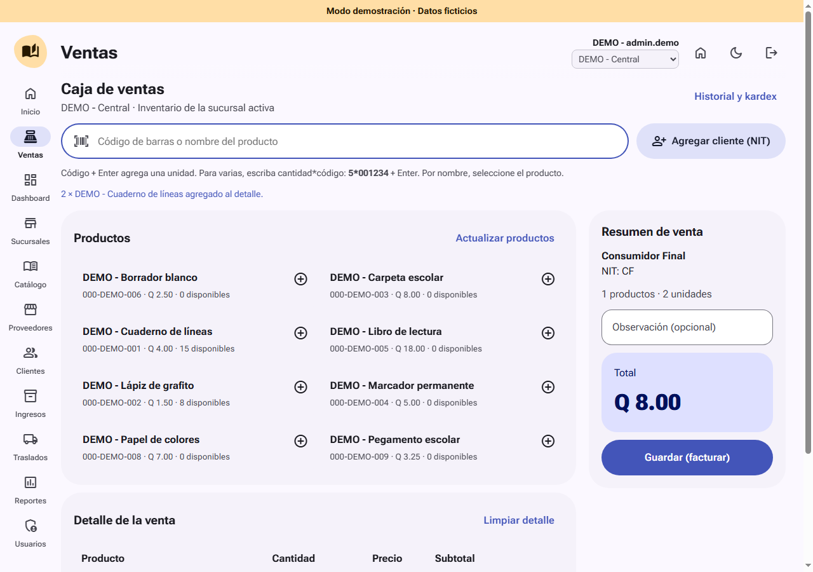
Detalle agregado con 2*000-DEMO-001. Los códigos y cantidades son ejemplos ficticios.
Entre en Ventas: la caja y el buscador ya están abiertos.
Escanee el código y envíe Enter para una unidad.
Para varias unidades, escriba cantidad*código y pulse Enter. Ejemplo: 5*000-DEMO-001.
Para buscar por nombre, escriba parte del nombre y seleccione el producto.
Revise o ajuste cantidades y quite líneas equivocadas antes de cobrar.
Un lector externo normalmente envía el código y Enter automáticamente. Se verificó ese comportamiento mediante teclado simulado; no se afirma haber probado un escáner físico. Si no existe el código o falta inventario, aparecerá un aviso y la línea no se agrega.
7. Cliente y revisión antes de cobrar
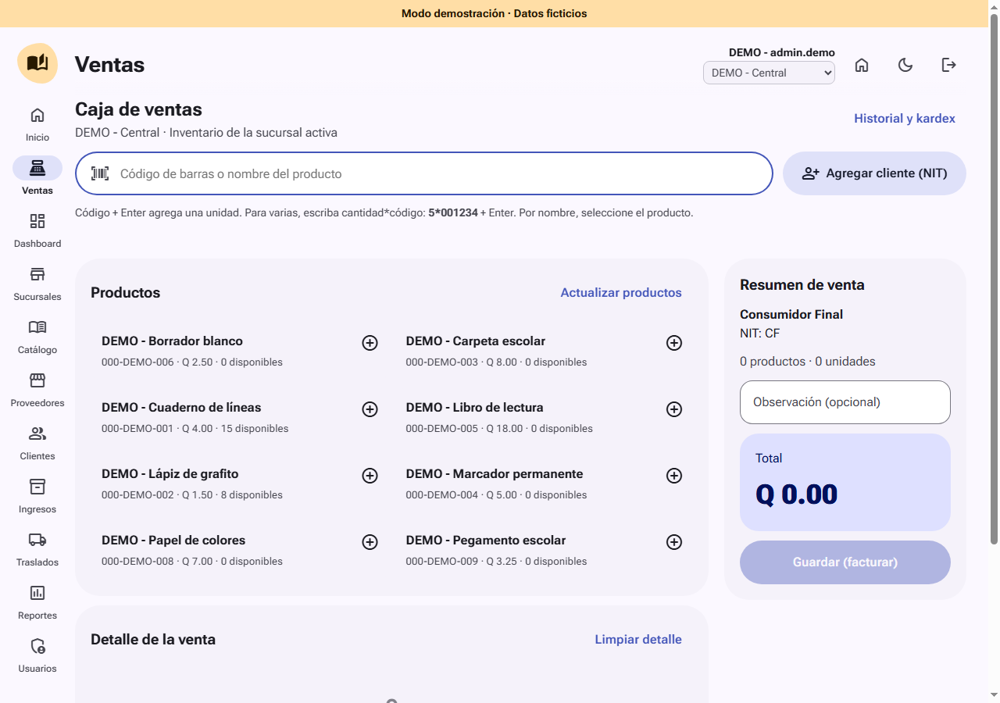
Buscador de productos y botón Agregar cliente (NIT) junto a él.
Pulse Agregar cliente (NIT). Busque el NIT exacto o seleccione un cliente por nombre.
Si no existe y tiene permiso de Clientes, use Registrar nuevo cliente.
Si la compra no requiere cliente identificado, conserve Consumidor Final · CF.
Revise cantidades, cliente y total. Pulse Guardar (facturar).
Si cambiaron precios o existencias, revise el aviso y el detalle actualizado antes de seguir.
Guardar (facturar) abre el cobro; la venta todavía no queda registrada. Los precios finales se verifican nuevamente en el servidor.
8. Cobrar y autorizar
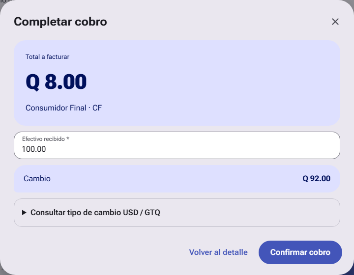
Paso 1: total, efectivo y cambio calculado.
Ingrese el efectivo recibido. Debe cubrir el total.
Revise el cambio y pulse Confirmar cobro.
En Autorizar venta, ingrese su código personal de cuatro dígitos y pulse Facturar venta.
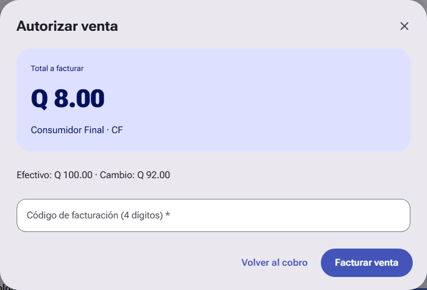
Paso 2: código personal sin completar. El código no se publica en el manual.
Después del registro se abre el comprobante y la caja queda lista para la siguiente venta. Puede imprimirlo o solicitar la factura de prueba. Esa factura no tiene validez fiscal.
9. Traslados entre sucursales
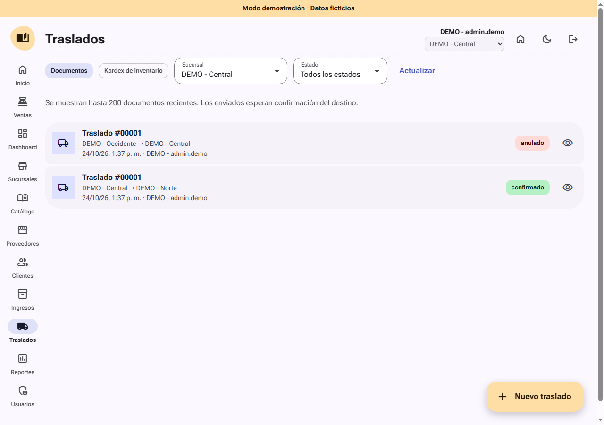
Consulta de traslados enviados, confirmados y anulados con datos ficticios.
Active la sucursal de origen y cree un traslado hacia una sucursal distinta.
Agregue productos disponibles y envíe. Las unidades salen del origen y quedan en tránsito.
Para recibir, active la sucursal destino con una cuenta autorizada, abra el traslado y confirme.
Para cancelarlo mientras sigue enviado, active la sucursal de origen y anule con un motivo.
10. Dashboard
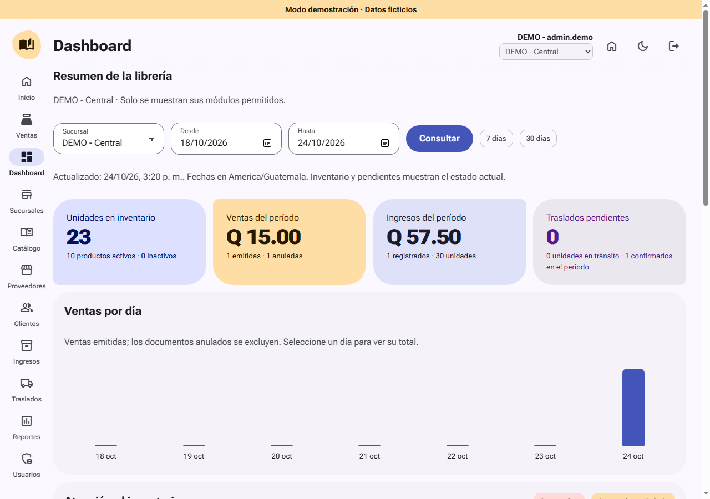
Indicadores calculados a partir de las operaciones registradas.
Seleccione sucursal y período para consultar ventas, ingresos, gráfica diaria y documentos recientes. Los indicadores de inventario son actuales; los movimientos y documentos usan el período elegido. Los traslados pendientes pueden haberse enviado antes de ese período y seguir en tránsito.
Puede usar accesos de siete o treinta días y fechas personalizadas, con máximo noventa días. Las opciones disponibles respetan sus módulos y sucursales. Un cero puede indicar ausencia de operaciones para ese filtro; no modifique saldos desde el Dashboard.
11. Reportes
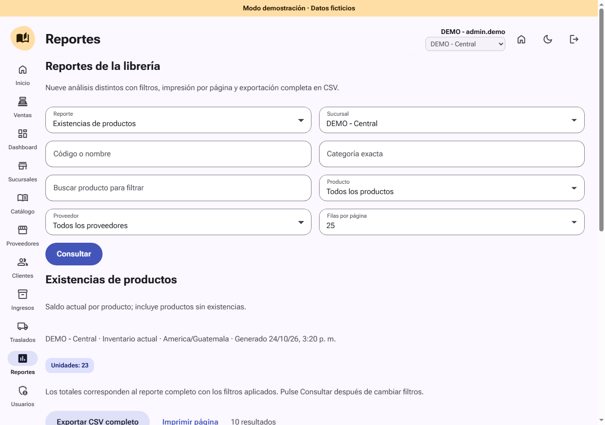
Selección de reporte, filtros y acciones de impresión/exportación.
Entre en Reportes, elija el tipo, ajuste los filtros disponibles y consulte. Para reportes con fechas, el período máximo es de 366 días. El empleado consulta su sucursal; el administrador puede seleccionar una o todas.
Exportar CSV descarga el resultado completo de los filtros. Imprimir prepara la vista consultada con su contexto; use Guardar como PDF del navegador si necesita un archivo. Verifique qué página está mostrando antes de imprimir una consulta paginada.
Grupo
Reportes disponibles
Inventario
Existencias; valoración por categoría; kardex.
Ventas
Ventas por día; productos más vendidos; ventas por cliente.
Operaciones y control
Ingresos por proveedor; flujo de traslados; auditoría de anulaciones.
12. Recuperación y mensajes frecuentes
Situación
Qué hacer
Respuesta de venta incierta
No cree otra venta ni cambie el detalle. Use Verificar venta registrada o Reintentar facturación de la misma operación.
Sucursal cambiada
Revise el nombre activo y recargue la consulta. La operación anterior no se envía automáticamente a otra ubicación.
Stock insuficiente
Compruebe sucursal y cantidades. Si la mercadería está en otra ubicación, tramite un traslado.
Sin permiso
Solicite al administrador revisar módulos y sucursales asignadas.
Código incorrecto
Use su código de facturación. No pruebe códigos de otras cuentas.
Servicio externo no disponible
Conserve el documento. Reintente la integración de prueba cuando vuelva a estar disponible.
Anulación rechazada
Revise estado, sucursal y stock necesario para la reversión.
Buenas prácticas de operación
Revise la sucursal al comenzar cada turno y antes de recibir traslados.
No comparta usuario, contraseña o código de facturación.
Use el historial para confirmar un resultado dudoso antes de repetirlo.
Cierre sesión al terminar. Contacte al administrador si detecta saldos o documentos inesperados.